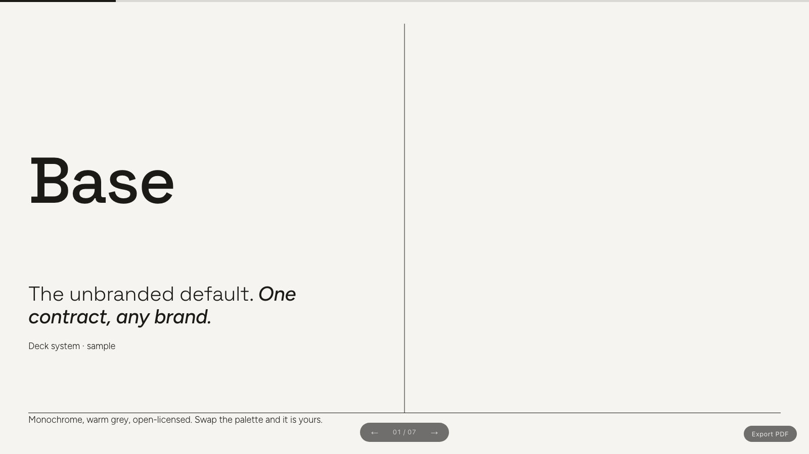

Slack-native AI agent template
Ekko
AI agents for Slack. Deployed in minutes.
Composio's 1000+ OAuth apps, remote MCP servers, and your own custom tools — merged into one surface. Packaged Agent Skills that turn a request into a branded PDF deck in the thread. pgvector memory across conversations. One command from nothing to a running bot.
npx create-ekko-agent my-agent
Node 22+ · the CLI handles the Slack app, Vercel deploy, and env wiring (~3 min).
Three tool layers
Composio (Gmail, Linear, Notion, …), MCP servers, and first-class custom tools. New connections appear on the next turn — no redeploy.
Makes decks, not just replies
Agent Skills render on-brand decks, documents, and social cards — delivered as a PDF in the Slack thread.
Remembers
Postgres + pgvector embeds past conversations and recalls relevant context across threads, automatically.
